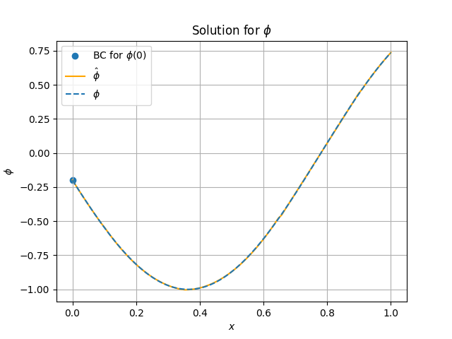
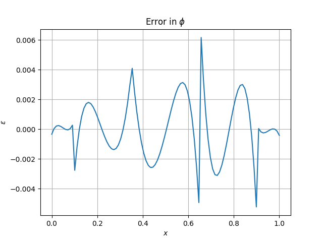
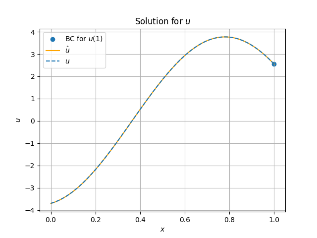
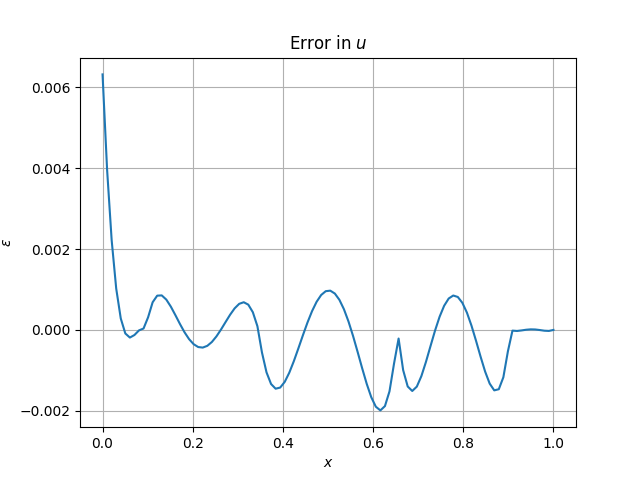

Note
Go to the end to download the full example code.
Example 2: Mixed Formulation of Poisson Equation in 1D#
This example shows how the Python module can be used to solve the mixed formulation of the Poisson equation in 1D. This formulation is typically regarded as more difficult way to solve the Poisson equation, but allows for higher order accuracy in the gradient of the solution, which may be more desirable in some cases.
Mimetic Derivation#
The first thing which ought to be done is to define the problem the same way it was defined in example 1. The goal is once gain to solve the Poisson equation in 1D:
With boundary conditions given for this case as Dirichlet on one side and Neumann on the other:
The initial part of the mimetic derivation is the same as was in example 1:
However, the difference now is that the goal is to keep \(u\). As such we know for sure that \(u\) must be a 0-form, as otherwise we can not take its exterior derivative. This then makes \(f\) a 1-form. The issue is then in how to reconcile the equation (1). Here, we solve this by multiplying the equation with a weight function \(w\), which then allows us to move the exterior derivative on it, instead of \(\phi\). This also means, that the weight function should be a 0-form:
This now determines the following:
\(u\) is a 0-form,
\(w\) is a 0-form,
\(\phi\) is a 1-form.
To solve equation \(second\), we must then use a 1-form weight function \(q\), which thus makes \(f\) a 1-form. With that and some abuse of notation, the entire system of equations becomes:
Manufactured Solution#
To validate the solver works, consider a case with a manufactured solution given by:
This gives the following forcing function:
And the gradient as:
import numpy as np
import numpy.typing as npt
from interplib import kforms, mimetic, solve_system_on_mesh
ALPHA = 1.2
BETA = 0.2
def f_exact(x: npt.ArrayLike) -> npt.NDArray[np.float64]:
"""Compute f(x)."""
return np.astype(
-((ALPHA * np.pi) ** 2) * np.sin(ALPHA * np.pi * np.asarray(x) + BETA), np.float64
)
def u_exact(x: npt.ArrayLike) -> npt.NDArray[np.float64]:
"""Compute u(x)."""
return np.astype(
-(ALPHA * np.pi) * np.cos(ALPHA * np.pi * np.asarray(x) + BETA), np.float64
)
def phi_exact(x: npt.ArrayLike) -> npt.NDArray[np.float64]:
"""Compute phi(x)."""
return np.astype(-np.sin(ALPHA * np.pi * np.asarray(x) + BETA), np.float64)
Mesh#
The mesh will once again be a simple line, since this is 1D. For this case, elements of the exact same order \(p\) will be used. #
Equation#
The equations are defined in the same way example 1. This time, the difference is that there are two equations which are to be solved per element.
The first equation is the one which enforces \(u\) being equal to the exterior derivative of \(\phi\). Note that the weak boundary conditions are to be specified later, once the solution is being computed.
## Weight form
## Unknown forms
phi = kforms.KForm(mesh.manifold, "phi", 1)
u = kforms.KForm(mesh.manifold, "u", 0)
w = u.weight
# Brackets are for readability
eq1 = (w * u) + (w.derivative * phi) == w * 0
Now the second equation can be defined, which forces the exterior derivative of \(u\) to match the prescribed forcing \(f\):
## New weight form
q = phi.weight
# Brackets are for readability
eq2 = (q * u.derivative) == (q * (lambda x: -f_exact(x)))
With these defined, the system of equations can now be formed. This time, the the forms are sorted based on their order. This is mainly just to get a consistent ordering.
system = kforms.KFormSystem(
eq1,
eq2,
sorting=lambda form: -form.order,
)
print(system)
[phi(1*)]^T ([ 0 | M(1, 1) @ E(1, 0)] [phi(1)] - [<lambda>]) = [0]
[ u(0*)] ([(E(1, 0))^T @ M(1, 1) | M(0, 0)] [ u(0)] - [ 0]) = [0]
Solving#
The problem can now be solved. This time, the continuity is enforced only on \(u\), since that’s a 0-form, while \(phi\) is a 1-form. This time, a weak boundary condition on \(\phi\) is given on the left boundary.
with np.printoptions(2):
resulting_splines = solve_system_on_mesh(
system,
mesh,
continuous=[u],
bcs_left=kforms.BoundaryCondition1DWeak(phi, float(phi_exact(mesh.positions[0]))),
bcs_right=kforms.BoundaryCondition1DStrong(
{u: 1}, float(u_exact(mesh.positions[-1]))
),
)
Visualizing the Results#
Both results for \(\phi\) and \(u\) are plotted.
#
from matplotlib import pyplot as plt # noqa: E402
nplt = 100
xplt = np.linspace(0, 1, nplt)
plt.figure()
plt.title("Solution for $\\phi$")
plt.scatter((0,), (phi_exact(0.0),), label="BC for $\\phi(0)$")
plt.plot(xplt, resulting_splines[phi](xplt), label="$\\hat{\\phi}$", color="orange")
plt.plot(xplt, phi_exact(xplt), label="$\\phi$", linestyle="dashed")
plt.xlabel("$x$")
plt.ylabel("$\\phi$")
plt.legend()
plt.grid()
plt.show()
plt.figure()
plt.title("Error in $\\phi$")
plt.plot(xplt, phi_exact(xplt) - resulting_splines[phi](xplt))
plt.xlabel("$x$")
plt.ylabel("$\\varepsilon$")
plt.grid()
plt.show()
plt.figure()
plt.title("Solution for $u$")
plt.scatter((1,), (u_exact(1),), label="BC for $u(1)$")
plt.plot(xplt, resulting_splines[u](xplt), label="$\\hat{u}$", color="orange")
plt.plot(xplt, u_exact(xplt), label="$u$", linestyle="dashed")
plt.xlabel("$x$")
plt.ylabel("$u$")
plt.legend()
plt.grid()
plt.show()
plt.figure()
plt.title("Error in $u$")
plt.plot(xplt, u_exact(xplt) - resulting_splines[u](xplt))
plt.xlabel("$x$")
plt.ylabel("$\\varepsilon$")
plt.grid()
plt.show()
- 
- 
- 
- 
Total running time of the script: (0 minutes 0.302 seconds)